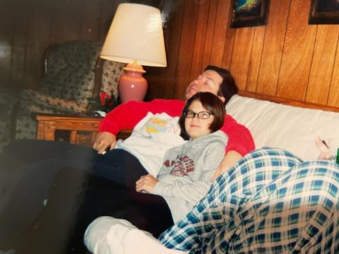
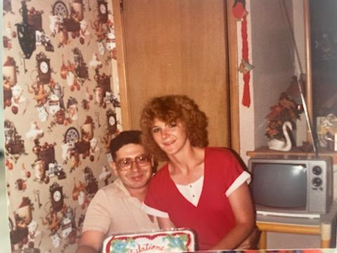
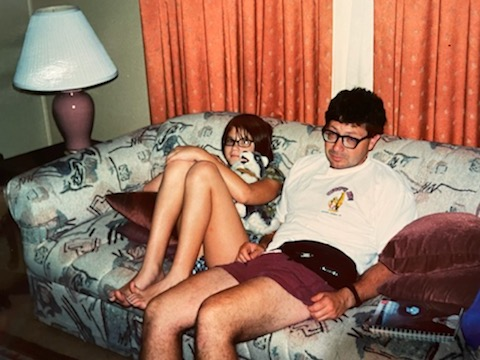
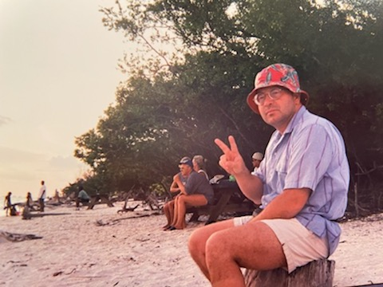
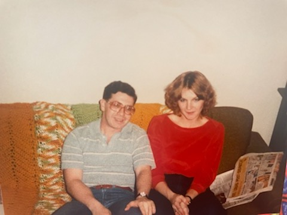
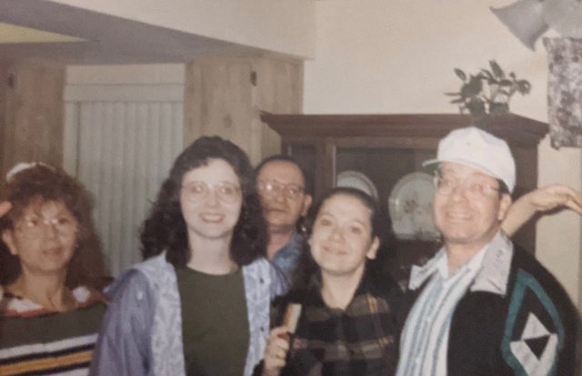

Gallery







Alexis "Alex" Sotomayor was born August 5, 1961 in the Bronx, New York. The oldest of three siblings, he was the only son. His parents immigrated from Ponce, Puerto Rico in the 50s. His mother Marta worked long hours in a factory, while father Tomas was a public servant. Growing up in the Bronx during the 60s was likely very dangerous and volatile, and by the age of 10-12 he was sent to a boarding school in Waterbury, CT. These were to be the best years of his life. While school was a challenge, my father greatly enjoyed his time spent in Connecticut.
Around the age of 16 however, the family moved to Florida, which he felt paled in comparison to the Northeast. These years were tumultuous, and upon graduating from high school, he immediately joined the Marines. He attended basic training in Parris Island, SC and later achieved the rank of Sergeant E-5. My father was a Marine through and through. He took great pride in his status as a veteran of the United States Marine Corps, and was a fighter until the end.
From basic training, he met my mother in Millington, TN, while she was a nurse in the Navy. They met when he was jogging, and the rest is history. The couple moved to Cherry Pointe, NC, where my sister Desiree was born in September 1984. After several years in North Carolina, my dad got a job with McDonnell Douglas as an air traffic controller, and the family moved to St. Louis, MO, where I was born in November 1989.
Shortly after I was born, my mother was stationed in Bahrain during the Gulf War in 1990-91. I was just one or two years old. My sister was sent to stay with my grandparents in Florida, while I was left with my dad. When my mother returned from the war, she was forever changed. She was still herself, but judging from the old family photos, she was different somehow. I never knew who she was before the war, but I wish I could have.
Growing up with my father, I always held him in high regard. He was often very strict and at times severe and frightening, but he loved his family. He would have done anything for us, and was always willing to help with whatever issues or difficulties we were having. I always admired his work ethic, dedication to the task at hand, and willingness to persevere in the face of adversity.
In 2005, right when I started high school, he moved us to Oklahoma, where it was a big culture shock. He had been offered a job at Boeing as a radar instructor, and in his mind, it was a better opportunity with better pay in a safer neighborhood. Fast forward to 2020, through some years of hardships involving adolescence and early adulthood for myself, and in October of 2020 he had a major stroke.
It is my sincere belief that the stroke was brought on by unnecessary stress caused by his work (and the pandemic). While at the hospital, he gave me the names of two men who were his superiors. He told me that they were the worst bosses imaginable. I still find it appalling that such terrible people can exist in the world. He died at 4:21AM on March 7, 2021. His last words to me were "I love you", spoken 10 hours before his death. Wherever he is now, at least I know he is with God. I love you Daddy.